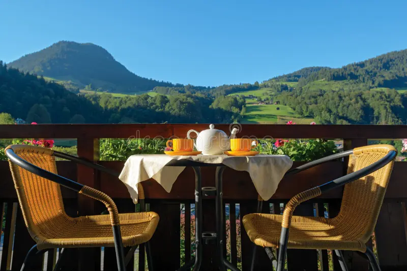

Somewhere betweenthe mountains & a good cup.
02 / THE MUSAFIR FEELING
Every journey
deserves a pause.
Musafir means traveller. And whether you've crossed a mountain pass or just a very long Monday, there's a place for you here.
We're a little café in Manali with a simple idea: freshly brewed coffee, honest comfort food, and conversations that don't watch the clock.
Make us your next stop ↗Freshly brewedMade with careFor every musafir